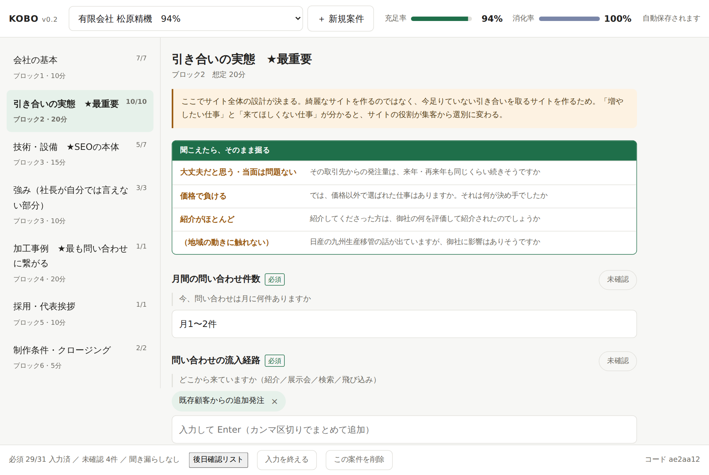
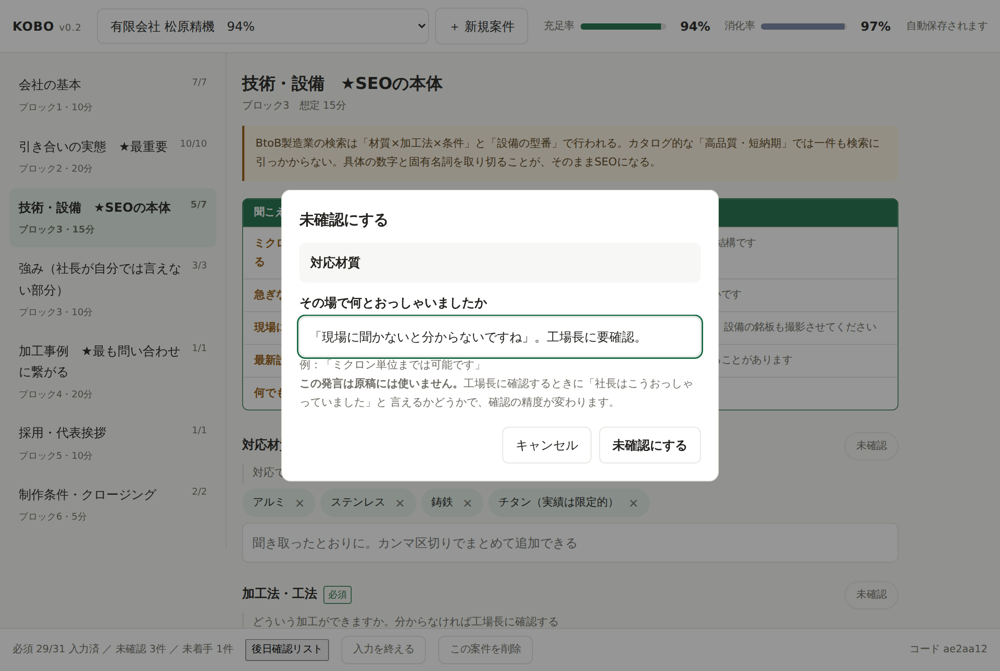
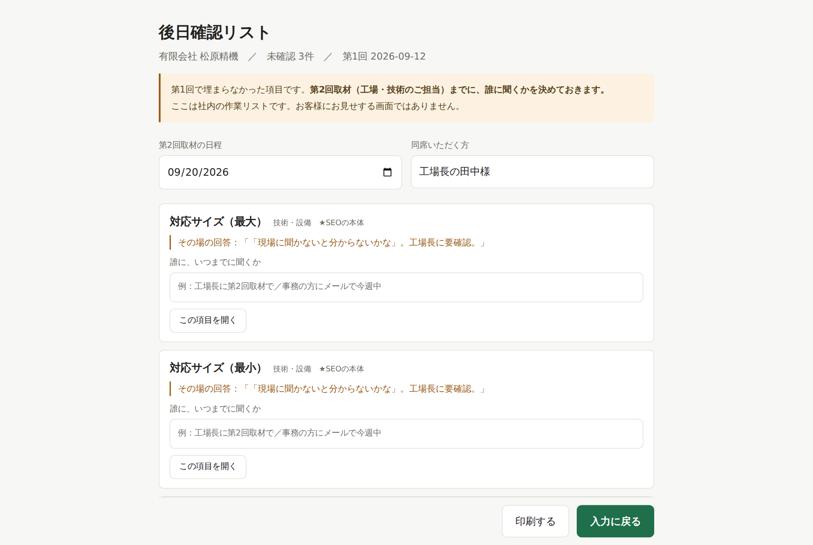
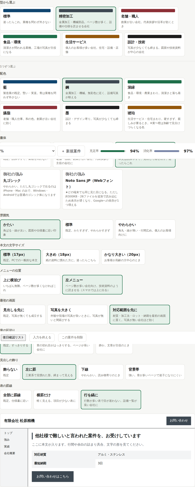
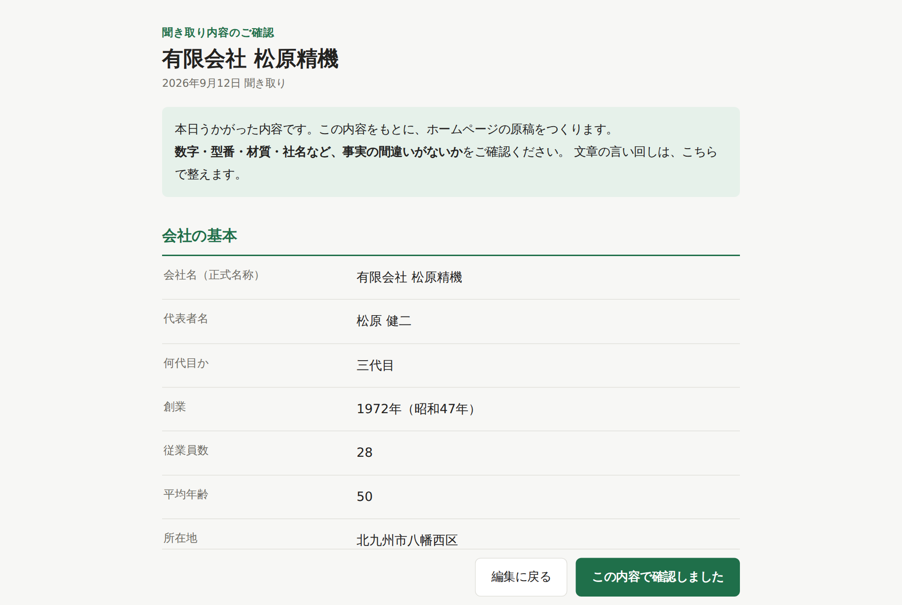
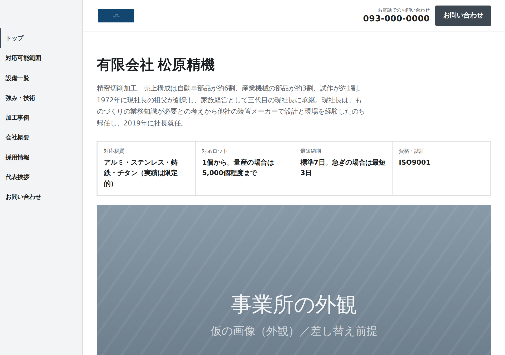
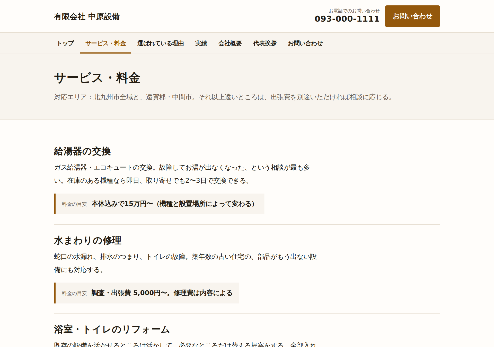

社内資料 ／ 営業担当者向け
北九州市とその近辺の、BtoB中小製造業に、引き合いを取るためのホームページを作って納品します。この資料は、営業をお願いするにあたって、事業の中身と、まだ決まっていないことを共有するためのものです。
01
「取材して、原稿も全部こちらで書いて、4〜6週間で公開する」ホームページ制作です。お客様にお願いする作業は、およそ5.5時間だけです。
Web制作が途中で止まる原因のほとんどは、原稿が揃わないことです。本業が忙しい社長に「自社の技術を文章にまとめてください」と頼むのは、実質的に無理があります。そこを我々が引き受けます。
02
北九州で「製造業専門」を名乗る制作会社は、調べた範囲では見つかりませんでした。材質・加工法・設備の型番まで聞ける取材の型を持っています。
競合の多くは「お客様に原稿をご用意いただきます」と書いています。ここが最大の差です。
保守は都度対応。固定費を嫌う中小企業に刺さります。監視とレポートは無償で続けます。
3つ目は、我々の作り方が静的サイト（更新のいらない作り）だから成立しています。サイトが何件に増えても、維持費はほぼ増えません。
03
| 商品 | 価格（税別） | 中身 | 誰に |
|---|---|---|---|
| 製造業スタンダード | 980,000円 | 10〜15ページ。事例ページ・設備一覧・対応可能範囲まで | 従業員10〜100名の製造業。主軸 |
| 製造業ライト | 480,000円 | ページ数を絞った構成 | 予算が合わない場合の受け皿 |
| 汎用ベーシック | 198,000円 | 5〜7ページ。30分の聞き取りで作る | サイトを持っていない小規模事業者。業種を問わない |
最初の数件は、汎用ベーシック（198,000円）で受けます。 実績がゼロの状態で98万円の案件を追うより、まず数件を通して納品までの工程を実際に回すことを優先します。汎用はサイトを持っていない会社が対象なので、既存サイトからの引っ越し事故も起きません。
製造業スタンダードは、その実績を持って提案します。
要相談 値引きを求められたときの引き方（どこまで下げるか、何を削るか）と、着手金の比率。社長案は「着手金30%＋検収後70%」ですが、押し返されたときの順番を決めていません。
要相談 公開後の保守の費用。 月額をいただかないこと・都度対応にすることは決めていますが、1回いくらにするかは決めていません。
04
5.5 時間
制作期間中に、お客様にお願いする作業の合計
| 内容 | 時間 |
|---|---|
| キックオフ | 30分 |
| 第1回取材（社長） | 90分 |
| 第2回取材（工場・技術のご担当） | 60分 |
| 原稿・デザインのご確認 | 60分 |
| 写真のご手配 | 30分 |
| 検収・公開前のご確認 | 60分 |
| 合計 | 約5.5時間 |
取材を2回に分けているのは、対応精度や設備の型番が、社長おひとりでは埋まらないとテストで分かったためです。1回と言っておいて後から追加で聞くほうが、印象が悪くなります。
05
最初の3件は「6週間」で見積もってください。 目標は4週間ですが、慣れるまでは手戻りが出ます。3件通して4週間でできたら、そこから言い方を変えます。守れない約束を先に言わないことを方針にしています。
06
| 条件 | 中身 |
|---|---|
| 地域 | 北九州市および近郊（遠賀・中間・下関あたりまで）。取材に2回行ける距離が条件 |
| 規模 | 従業員 10〜100名くらい |
| 業種 | BtoBの製造業（金属加工・機械部品・装置まわり） |
| 状態 | サイトが無い、または5年以上更新されていない |
探す先として、「ものづくり北九州企業データベース」（北九州商工会議所 機械金属部会・約780社）があります。業種・保有設備・所在地で検索できるので、我々の条件でそのまま絞り込めます。
要相談 リストの作り方と、最初に当たる順番。 紹介から入るのか、DMから入るのか。友人の既存の人脈を使うかどうかも含めて決めたいところです。
07
無理に受けると、こちらが回らなくなって全案件に迷惑がかかります。断る判断は営業側でしてもらって構いません。
| こう言われたら | 断る理由 |
|---|---|
| ネットショップを作りたい | 作れません。買い物かご・会員制・予約システムは対象外です |
| WordPressで作ってほしい | 現段階では対応しません。得意な会社を紹介する形で構いません |
| 福岡市／熊本でお願いしたい | 取材に2回行く必要があるため、移動が割に合いません |
| とにかく安くしてほしい | 価格で勝つ事業ではありません。5万円のサイトとは戦いません |
08
実績を見せてください
正直に「これが最初の案件です」と言ってください。 隠すと後で必ず崩れます。代わりに、作り方の中身（取材の台本、原稿の作り方、引き渡しの内容）を全部お見せできます。自社サイトも準備中です。
最初の数件は、汎用ベーシック（198,000円）で受けます。 実績ゼロで98万円を追うより、まず工程を通すことを優先します。「小さく始めさせてください」と言えるほうが、相手も決めやすいはずです。
公開したあと、自分で更新できますか
ご自身での編集には対応していません。更新はこちらが承ります。軽微なものは48時間以内に反映します。電話でも受けます。 そのぶん表示が速く、維持の費用がかからない作りです。
要相談 1回いくらにするかは未定です。金額を聞かれたら「追ってお伝えします」で止めてください。
他社に乗り換えることはできますか
できます。 サイトのファイル一式・原稿・画像・DNSの設定を、公開時にお渡しします。ドメインもお客様名義です。「弊社がいなくなっても、次の業者さんがすぐ引き継げます」と言えます。
月々いくらかかりますか
月々の固定費はいただきません。 死活監視・フォームの疎通確認・月次レポートは無償で続けます。かかり続けるのはドメイン代（年1,600円前後）だけで、これはお客様名義の契約です。更新をご依頼いただいたときだけ、その都度いただきます。
前の業者と連絡が取れなくなって困っています
いちばん効く話です。 だからこそ、ドメインはお客様名義、ファイルは納品時にお渡し、という作りにしています。この不安を持っている会社は、こちらが本命の顧客です。
09
| 項目 | 内容 | 状態 |
|---|---|---|
| 役割 | 新規開拓、商談、第1回取材で話す側（画面入力は事業主が担当） | 決定 |
| 形態 | 外注費としてお支払い | 決定 |
| 固定費 | 事業主が全額負担。 折半はしません | 決定 |
| 書面 | 条件が決まり次第、書面にします | 決定 |
| 報酬 | 制作費に対する％ | 要相談 |
要相談 報酬の％。 社長案は「自分で開拓した案件 25〜30%／紹介だけの案件 10%」とチャネルで分ける形です。手間が違うので分けたい、という趣旨ですが、数字も分け方もここで決めたいところです。
取材で話す側をお願いしたいのは、製造業の話は、聞く人が現場の言葉を分かっているかどうかで深さが変わるからです。入力はこちらでやるので、画面は見ずに相手の顔を見て話してください。
10
「これから作ります」ではなく、すでに動いているものです。
10-2
「これから作ります」ではないことを、画面で見ていただくのが一番早いです。以下はすべて動いているものです（会社名・データは検証用の架空の会社です）。







※ 画面に出ている「★SEOの本体」「社長が自分では言えない部分」などは、我々だけが見る言い方です。 お客様にお見せする確認画面には出ません。
11
次に会うときに、この5つを決めたいです。
| 項目 | 社長の案 |
|---|---|
| 報酬の％ | 開拓 25〜30% ／ 紹介 10%（チャネルで分ける） |
| 屋号 | 「ものづくりウェブ」＋「北九州の製造業専門のホームページ制作」 |
| 着手金の比率と、値引きの引き方 | 着手金30%＋検収後70%から始める |
| 公開後の保守の費用 | 未定。月額なし・都度対応までは決定。1回いくらかを決めたい |
| リストの作り方と当たる順番 | 未定。商工会議所のデータベースは使える見込み |